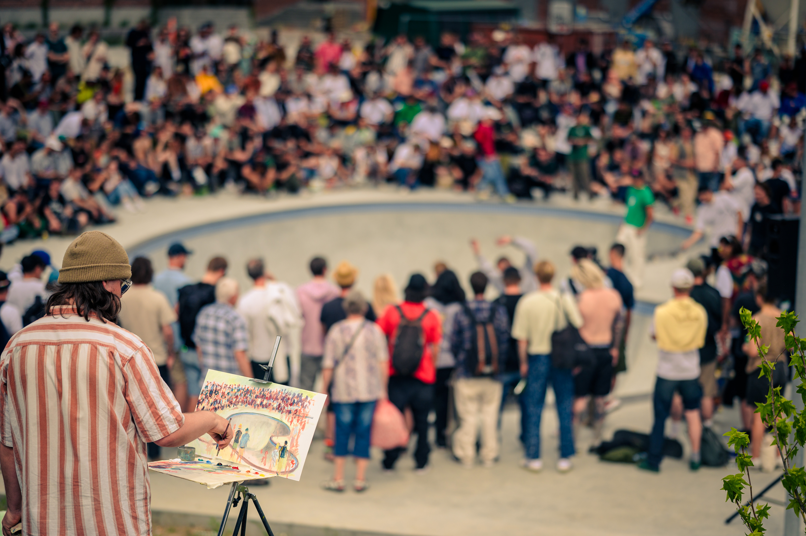
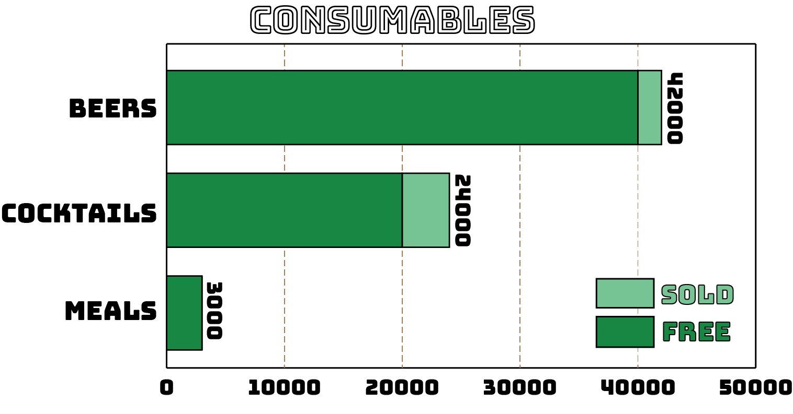
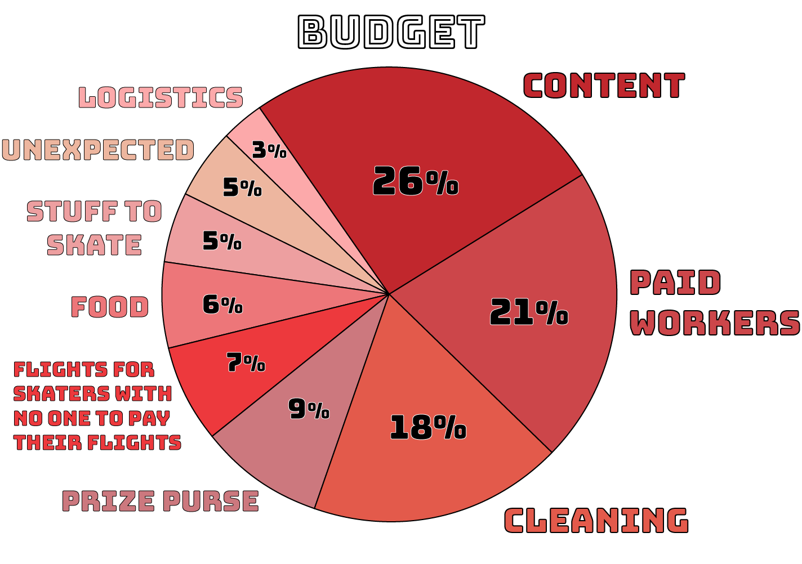

4PLY MAG
William Frederiksen Interview

Co-Founder of The Copenhagen Open
William, Simon and Keld have been running Copenhagen Open for the last 15 years, making them directly responsible for some of the best times of all time.
If you've ever wondered how to do something similar in your own city, these guys have the answers. We've interviewed the one and only William Frederiksen to chat about the event and show everyone how it's done.
If your city doesn't look like a Skate 3 map, keep that in mind while you're reading.
If you're not familiar with Copenhagen Open for whatever reason, check out this year's recap video. Also check out our breakdown of the last 16 years of CPH Open data courtesy of The Boardr. Enjoy <3
What makes Copenhagen Open what it is? What's the recipe?
Well that kind of depends on what your experience is of what it is. For me Copenhagen Open is kind of reflecting our view of 'This is our scene, this is how we do it in Copenhagen'. We get rowdy, but we also get pretty serious.
There's a lot of beers to drink because we really like that, we have great food, we have music that isn't necessarily shit you hear all of the time on the radio.
I mean I guess our recipe is trying to do it the way we see skateboarding. Creativity is obviously the first word that you have to use. Freedom is also a big thing that I feel like the Danish skateboard community has taken very seriously. We’re actually not into 45 second runs or street courses that all look the same. We want to take this creative stuff pretty seriously and the freedom to do it. Also in the sense that no ones going to tell us if pressure flips are all of a sudden out of style. We’re going to do what the f*** we do.
We’ve had a long history of doing some pretty crazy unsanctioned events. There's always been this really strong, huge community around skateboarding that just attracted a lot of other people, so every time the generation before me put on an event in Copenhagen it was insane. Fireworks, beerbongs, street parties, kids running wild, just like crazy mayhem stuff.
That for me has always been like, yeah, this is pretty skateboarding. Not because it's all about booze and naked women but because you know, yeah, we’re here to f***in' party and skate. When we all get together we don’t take anything very seriously, it's just like, ‘Is everyone having fun? Yes? Cool. Let's go.’

How long does it take to plan?
A year, we've already started. We start on Sunday when the event is done. We have a meeting with Ryan and the team and talk about next year.
And it's just the 3 of you?
Yeah so we’re 3 partners, Keld has everything to do with logistics, building all the obstacles and setting up the spots, hosting all our guests, ordering hotels, flights, hiring cleaners, all of that. Simon plans all the content production and I deal with all the pre-planning, so that's permits, sponsors, police and stuff like that.
When we meet we try not to bring too much of our own portion into it,
we meet only to brainstorm and be creative. You know, red wine and weed kind of meetings, and we do it very analogue actually. We always have a big table with a big piece of cardboard and we start kind of drawing and talking about what are the fun things to do. What's the story? What's the theme? We always have a theme. It doesn't necessarily translate in the content that we put out but it helps us understand what we’re trying to say.
2019 was about city development and how to use city spaces, communal transport and stuff like that.
In fact it's pretty much the same as we’re doing this year, visiting these spaces both in Copenhagen but also Rune’s Bowl has that story of like, that was a really shitty ghetto and now they’ve built this big skatepark and planted some trees, and you know, utilizing these dead city spaces to become active and filled with culture and stuff like that.
What is it about Copenhagen that makes it a perfect city to do this?
The most important element is Copenhagen's politics on how we can utilise the city and all of the spots.
We have a bunch of very progressive politicians who choose creativity, activity and culture over everything else. These are the key elements to living in a city and our politicians don’t mind the noise and chaos that our events sometimes create.
The city's infrastructure is also a key element. The fact that everything is connected with bike lanes and you're never more than a 20 minute bike ride away from anything so the whole city is accessible all the time.
Then there are the spots. Copious amounts of creative architecture perfect for skateboarding. Loads of plazas and spaces where skateboarding is tolerated with indoor and outdoor parks to keep everyone going all through the year.

Do you think skate contests are changing?
I definitely feel that before Copenhagen Open and probably Dime also, (they’re our cousins in some way) when someone wanted to do a skate contest they were like ‘Okay, fencing, bank to bank, big rail, security guards, a tent, an announcer that calls all the tricks’. I think, or I'd like to hope that with our success and with all the content that gets put out from our events people will be like 'Oh! We don’t need all of that stuff, we could actually just do it the way that we really want to do it and not make it look like a tennis match.'
When you’re making the documentaries/movies, are you trying to make them in a way that inspires other scenes to do something similar?
Yeah, definitely. We have a set of values that are like, 'Are we making a difference here? Does anyone give a shit? Does it all make sense? Why are we doing it?' Stuff like that, and in that set of values is like, 'How can we inspire other communities and other cities to do the same?'. We get a lot of people asking us if we can come to their town, especially from South America but also from all around Europe as well. We were working on a plan of maybe trying it in Miami, just because we thought Miami was quite interesting. I don't really feel that it's on the skate map so much, but there's a hell of a lot of skaters coming out of Florida in general and the spots down there are amazing, I mean really, really mind-blowing.
Just to kind of prove people wrong that it actually - obviously Copenhagen is a big part of our success - but you can also do it in this way in your city. That definitely counts for the states because it's just a crazy place and everybody kinda says ‘Ahh this would never go down here.’
We also planned an event in Athens. Athens for me feels like Berlin just 20 years ago, where everything is a bit kind of unstructured and the infrastructures have kind of imploded, but thats made space for all of these more quirky things, and again the spots in Athens are just again like f***ing mind-blowing. That was also part of an idea, not because we necessarily want to go to Athens, but just to see, are there some elements of this that can be exported out of Copenhagen?
But I feel like you know, the Helsinki Hellride has probably looked over our shoulder and drawn inspiration from what we do. Kevin Baekkel is doing something this weekend in Oslo that I’m pretty sure will be pretty Copenhagen Open-ish.
Which elements do you think can be exported and replicated in other cities?
Well the most important export is the message that not all politicians play the house of cards, in fact most politicians go into politics to make the world a better place. Unfortunately we mostly hear about politicians making the world a worse place, so we are left with the feeling they are not to be trusted and it's impossible to change. Everyone needs to believe that we can change things, and if you're not a politician yourself but you want to change something, you need to talk to a politician. If there aren't enough skate spots in your city or you are not allowed to throw an event in the streets, go ask one of your local politicians. And if that politician cant help, go ask another until you find someone that wants to help you. A great thing about politicians is that after every election there are new ones to talk to. If you don’t like the status quo, don’t worry. It will have changed in 4 years. This sounds way easier than it is and it probably can't be done everywhere, but I bet you that there are a lot of cities where it works just like in Copenhagen.

How do sponsors work with this an event like this?
The money that comes from the sponsors just decides how big and rowdy the event is going to be, and the more they put in the bucket the more shit we can do. Obviously dealing with a huge company like Nike we’re not just dealing with some guy, you know? We have a lot of things to take into consideration but all our sponsors and deals are based on personal relations. If we don’t have that personal relation there's no way we’re going to get them on as sponsors. There are some things that they want to get out of a sponsorship, like they want people to know it's a sponsored gig, but they're really, really good at then letting us decide how we communicate that. It’s very, very loose, and I think that counts for all of our sponsors. They really trust in what we do. I wouldn’t say we’re like Robin Hood taking from the rich and giving to the poor but we’re very aware of which skaters can find their own way here, who we can help and what hardware brands we can help. All the hardware brands that are on board, if they pay any money it's a symbolic amount of money because we don’t want to take money out of that infrastructure. So we do have a very, you could call it maybe a socialistic approach to handling the budget I guess.

So all the money goes straight back into the event and flying people out?
Yeah and it makes it so much more pleasurable to work with, especially when you’re going through the budget. If it had to create money theres no f***ing way it would happen. We hardly sell anything at the event and obviously if it was about a figure or if somebody needed to make a surplus out of it, we’d maybe be like ‘Oh, well maybe we should sell some tickets or at least sell some beers’. Again, talking about the recipe, that's definitely a part of it, that we’re not connected in that way to having a revenue or surplus. I think maybe this is also probably a bit of our success. It started, and I guess it still is kind of a hobby project. It's a love child, we’re not making a living off of it. It's something we do in our spare time on the side of our proper jobs.
Have you ever run into issues dealing with a smaller budget?
No no, not at all. I mean it was really interesting last year when certain sponsors couldn’t commit because it was too close to Covid so we had about a third of the budget that we normally work with, and that was a really interesting position to be in because we had to rethink everything. What are the bare necessities? The first thing was our content production because that was a huge huge block. I think this year we had about 10 filmers and 5 photographers and we have an editor and people doing the soundtrack.
That's your biggest expense?
Yeah.
That's gangster.
I always forget that it must be quite cool to work for Copenhagen Open, because it’s a great gig and I'm just like ‘Are you sure? Isn't it really hard work?’ and they're like ‘Nah this is amazing.’ But no, you’re absolutely right, we definitely try to spread that out because like you said, it's difficult. And we pay them grown up money, not sort of ‘Oh can you do this for free? We’ll give you a hundred beers.'

Finally some words of advice from Simon -
"Keep it simple and focus on the good times. Make it free and open for everyone. If you want to bring your own beverage and food you are welcome to do this. If you want to disrupt the contest by doing your own thing, you are welcome to do this. In other words make sure there is room for everyone and let the people figure it out themselves. Your job as the organizer is to make sure people feel at home and are having a good time. This should be possible to do almost anywhere in the world…"
The Copenhagen Open 2022 movie is out now, check it out and follow Copenhagen Open on instagram.
Major shoutout to the guys at The Boardr for sharing their event data with us. Check out our breakdown of the last 16 years of CPH event data here. Also, shoutout to Nike and the rest of the sponsors for allowing this to happen year after year. We know some of you are a little scared of Nike destroying skateboarding once and for all, but as long as they keep supporting stuff like this I think we're all going to be okay.
If you have any ideas, datasets, or pitches you'd like to discuss, hit us up on the 4PLY Instagram.